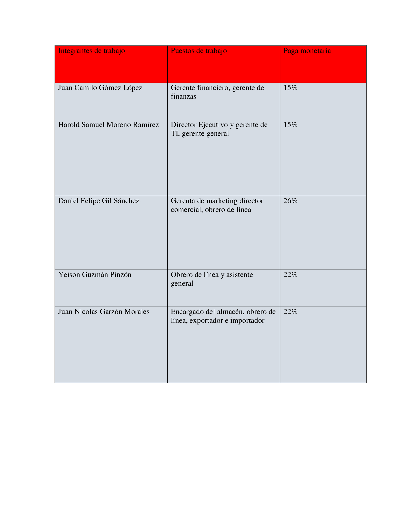

Hoy vamos a hacer un entretenida manualidad, un muñeco hecho con un globo y harina, que pueden usarlo de adorno o hasta de llavero, que sirve para liberar tensiones por su contextura, no es un milagro terapéutico, solo un pequeño desahogo.
Procedimiento
1.-Pongan el embudo en el Globo.
2.- Coloquen harina a través del embudo al globo, si la harina no cae, ayúdenla con el lápiz para que entre.

3.- Una vez que llenen el globo con harina (pueden ir estirando el globo para que entre más, ojo que cuando se sale el aire pueden tener una sorpresa: la cara llena de harina), estiren la cola del globo y saquen todo el aire que este tenga, esto es importante, no puede quedar nada de aire, luego hagan un nudo al globo, uno o dos nudos.


4.- Ahora, dibujen una cara en el globo

5.- Con un poco de silicona o el pegamento que están usando, peguen los ojos de plástico sobre los que dibujaron ustedes, no los muevan hasta que estén firmes.
6.- Ahora tomen la lana y dóblenla en varias partes como se ven en la foto:
7.- Tomen un poco de Cinta Adhesiva y colóquenla a la mitad de la lana doblada, enrollando esta.

7.1. Adicionalmente, si quieren, puede amarrar un pedazo de lana sobre la cinta. Esto es para que esa parte también quede con pelo, porque eso es lo que estamos haciendo, pelo, les arruine la sorpresa, lo siento.
8.- Ahora, con una tijera, corte los dobleces de la lana, como se ve en la foto:

9.- Con un poco de Silicona pequen el “pelo” sobre el muñeco, idealmente tapando el nudo, pero si no se puede, no importa.

10.- Esperen a que se seque para que quede firme y ya tienen su muñeco, la gracia es que lo pueden deformar a gusto y están con ansias o estresado lo pueden apretar y apretar y estirar y retorcer, pero OJO con las uñas, si no tendrán que aparte de estar estresados aspirar la harina.

Buenos dias comprador,hoy le vengo a mostrar nestros
productos infantiles y nuestras instalaciones de produccion
,los cuales tendran el fin de complacer las nesecidades de
sus hijos y de ustedes a un precio aceptable.
Para ello demostraremos la resistencia y eficiencia en los materiales que
se piensan manejar a lo largo de nuestra hornada,tambien se piensa mostrar
nuestro personal de trabajo quienes manejan una experiencia laboral
en los materiales requeridos y en las areas de trabajo laboral.
Se debe tener encuenta que nuetra seguridad se dara a tratar mas adelante
con el fin de ampliar el tema el cual,se basara en: el manual de seguridad
(se lazara mas adelante),el reglamento del comprador(realizar su compras o denuncias)
tipo de pago y inico de sesion(gmail o hotmail).La pagina tendra una actualizacion
diaria para la comodidad del usuario(se tendran encuentas sugerencias).
Espero que sea entendible y de su agrado el ver nuestros diseños laborales y nuestros proximos
productos novedosos,si se tiene alguna inquietud, se dejara nuestro correo corporativo al final
de la introduccion.
Puos es una empresa libre e innovadora en el mercado que ofrece aseccsorios de uso personal dismuniyendo los niveles de estres y brindan nuevas expectativas para nuestros clientes e inversionistas
Poues para el 2022 ,busca satisfacer con ecxenlecia y calidad con sus productos ,las necesidades de nuestros clientes con productos seguros y ambientalmente sanos manteniendo altos estandares de calidad y logrando un posicionamento en el mercado a nivel local
moldea tu imaginación desetrezando tu mente con nuestros pous y mucha diversión

Se vendera los iconicos muneñecos pous, pero a diferencias de los casuales, estos seran eleccion propia en donde eligiaras su color, su caja de voz, su pelo, sus ojos y su
distintiva ropa(donde esta sera distintiva y original).
Si su muñeco sale defectuoso se daña rapidamente, se podra comunicar con nuestros secretarios para arreglar su prodcuto(esto sera transferido a su cuenta pero con un precio minimo se
le dira al comprador al momento de su arreglo)como principal venta
Los primeros pous seran realizados con materiales basicos para la verificacion de sus compradores, como principal se utilizara globos de buena calidad y para despues se utilizara un material mas flexibles para el uso infantil para evitar el consumiento de este se advertira las condiciones en que se debe utilizar el producto(instrucciones).El segundo material sera la mas del "pou"el cual sera arcilla principalmente pero despues se utilizara goma la cual emanara un olor que hara ver nuestro producto novedoso.para la vestimenta se utilizara tela o cuero de plantas(este es mucho mas recomendado para evitar el maltrato animal,unque este material sera mucho mas costoso al momento de comprarlo). los ojos y el cabello no seran relevantes ya que se piensa utilizan los ojos ordinarios pero de distintivos colores.